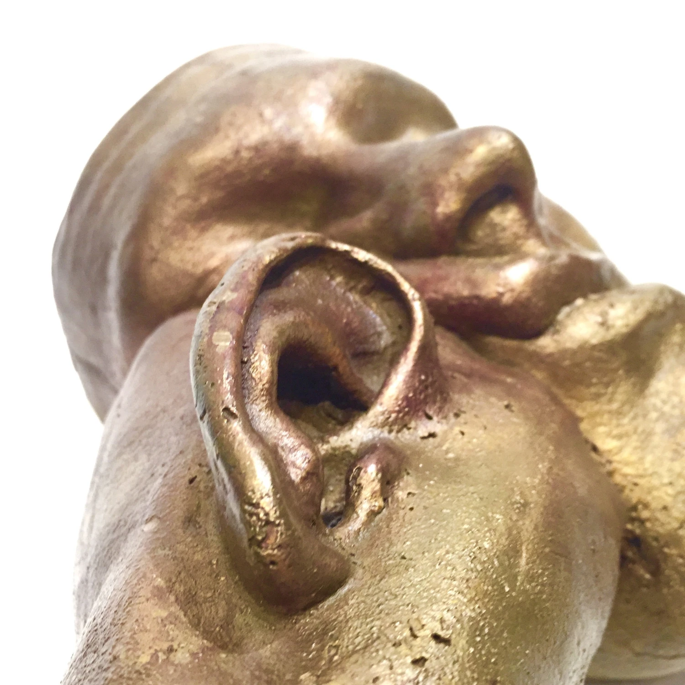
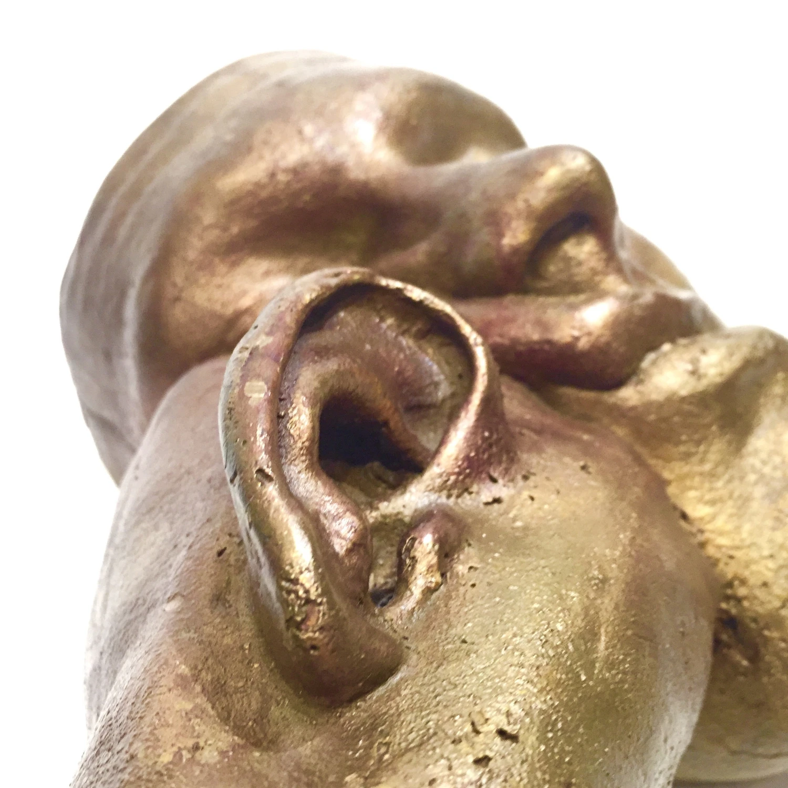

Hamartia
◼ A series of sculptures based on Mycenaean artifacts
◼ 2019
Challenge
Hamartia is a term in Greek tragedy that refers to the personal flaws that ultimately cause a hero’s downfall. This series was a personal project that functioned as a means to investigate and represent flaws of character, as well as a reminder to guard against them.

Research
The series took inspiration from the Mask of Agamemnon, an ancient Mycenaean funerary mask, and the Linear B tablets which contain Mycenaean script. I chose to work with bronze and ceramic earthenware for their resemblance to the source material.

Ideation
All tiles contain phrases composed of 24 letters that reference the bronze pieces that accompany them. I sketched various forms and letter configurations and experimented with different types of clay textures and bronze patinas.
Creation
I created the masks using the “lost wax” method in which a wax positive is made from an alginate mold and used to create the final form in bronze, which is then polished and patinated. The tiles were fired at low temperature and then rubbed with ash to add texture and color.
Result
5 masks and 4 arms in bronze, 5 tiles in ceramic earthenware. Each set represents a different character flaw. Additional sculptures in the series are viewable at https://hangzhouarchives.xyz/ha_hamartia.html
 

 nest coffin
e-steel
black diamond conversions
design of the afterlife
estuaire
nest coffin
e-steel
black diamond conversions
design of the afterlife
estuaire